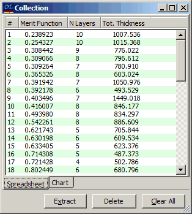

Exercise 10. Random optimization
Exercise 10. Random optimization
In many cases it is difficult to find a suitable starting design for the refinement procedure. In such cases it may be useful to carry out a sequence of optimization procedures with random starting designs. The Random optimization option is intended for this purpose. Because of highly efficient optimization algorithms used in OptiLayer, this design approach often provides good results.
To demonstrate this option of OptiLayer we shall design a set of anti-reflection coatings for the visible spectral range. Required files are located in the Problem directory EX10. In SF Mode you need to use Import Problem Directory command (File Menu).
Load GLASS substrate, SIO2 and TIO2 layer materials, and Ar-vis target. Target has 20 logarithmically distributed spectral points in the range from 400 to 800nm.
Start the Random optimization (Synthesis menu) and specify in the Random Optimization Parameters window 10 layers and Average optical thicknesses 50nm for the both materials (Av.Opt.Th column). The Random optimization procedure starts after clicking the OK button. This is a potentially infinite sequence of cycles consisting of automatic generations of random starting designs followed by optimization procedures. After each cycle a new local minimum of the merit function is found, the resulting design is analyzed and stored by OptiLayer.
OptiLayer stores up to 100 best designs in a special storage named Collection. The designs are ordered according to their merit function values. It often happens that some results are obtained several times, in such cases the repeated result is discarded.
To generate layer thicknesses of random starting designs, OptiLayer uses random numbers which are uniformly distributed in the interval from 0.0 to twice the average value which was entered in the Random Optimization Parameters window.
In many cases it is advisable to set up a Random optimization procedure by specifying a rather large number of layers and relatively small average layer thicknesses. As a general rule the number of layers specified in the Random Optimization Parameters window will be reduced during the optimization process. Since the process is a random one designs saved in the Collection will have different numbers of layers. This may be helpful for choosing the most practical design basing on the designers personal opinion about the most suitable combination of three major design parameters indicated in the Collection window (merit function value, number of design layers, and design total thickness).
Once started, the Random optimization procedure will run indefinitely until explicit termination. After the termination the best obtained result will be automatically loaded from the Collection storage.
Because of the stochastic nature of the Random optimization procedure we can not predict exactly what results you will obtain. In our case the Collection window looks as follows.

Note that you can analyze the contents of the Collection in more detail after finishing the Random optimization procedure. To analyze any design use the Extract button.